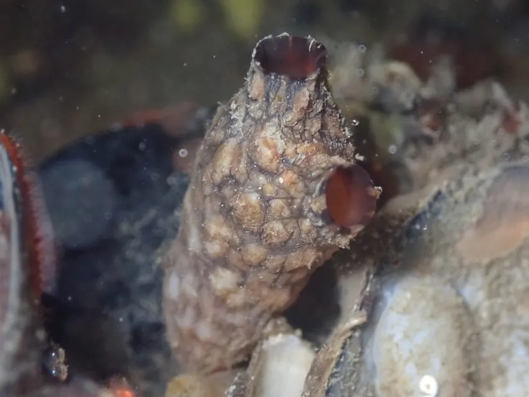

其他无脊椎动物 · 动物界
柄海鞘 Styela clava

外形像带柄皮囊、以滤食为生的被囊动物，幼体有脊索和尾，成体却固着不动，是理解脊索动物演化的关键类群。
- 分类
- 门脊索动物门纲海鞘纲目褶鳃目科柄海鞘科属柄海鞘属
- 栖息环境
- 潮间带至浅海岩礁、船底、码头桩柱与养殖设施表面
- 地理分布
- 原产西北太平洋，中国黄海渤海沿岸常见，现已扩散至全球温带海域
- 保护级别
- 暂无评估
物种志
柄海鞘成体长6–15厘米，身体呈棍棒状，表面覆盖一层革质、带小突起的被囊，颜色多为黄褐或灰褐色。顶端有两个水管孔，一个进水、一个出水；基部有一根短柄，把它固定在附着物上。
它的幼体却完全不像成体：蝌蚪状，有脊索、背神经管和一条能摆动的尾，自由游泳数小时后才附着变态，尾部逐渐被吸收。成体靠纤毛驱动水流，滤食浮游植物和有机颗粒。柄海鞘雌雄同体，异体受精，也能出芽繁殖。它原产西北太平洋，随船底附着和养殖设施扩散到北美、欧洲、新西兰等地，成为污损生物和入侵物种；被囊中含有的被囊素是一种纤维素，在生物材料研究中颇受关注。它在我国黄海、渤海沿岸常见。
形态与习性
- 体长6–15厘米，身体呈棍棒状
- 水管孔顶端两个，分别用于进水和出水
- 幼体蝌蚪状，有脊索、背神经管和尾
- 食性滤食浮游植物和有机颗粒
- 入侵性随船底附着扩散，成为污损生物
- 被囊素被囊中含纤维素，可用于生物材料研究
趣味知识
- 它小时候有脊索和尾巴，长大后却固着不动。
- 柄海鞘的幼体像小蝌蚪，会自由游泳几个小时。
- 它是全球常见的污损生物，常附着在船底。